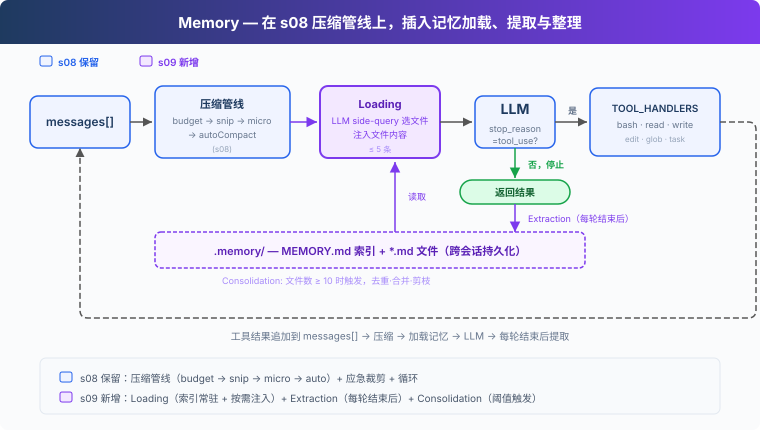
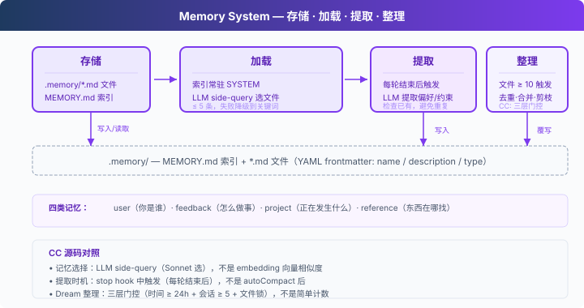

s09: Memory — 压缩会丢细节，要有一层不丢的
"压缩会丢细节, 要有一层不丢的" — 文件仓库 + 索引 + 按需加载，跨压缩、跨会话。 Harness 层: 记忆 — 跨压缩、跨会话的知识积累。
On this page
s01 → ... → s07 → s08 → s09 → s10 → s11 → ... → s20
"压缩会丢细节, 要有一层不丢的" — 文件仓库 + 索引 + 按需加载，跨压缩、跨会话。
Harness 层: 记忆 — 跨压缩、跨会话的知识积累。
问题
s08 的 autoCompact 会把当前目标、剩余工作、用户约束写进摘要，但细节会丢失："用 tab 缩进不要用空格"可能被简化成"用户有代码风格偏好"。而且新开一个会话，连摘要也没了。
LLM 没有持久状态，所有信息都在上下文窗口里。上下文满了要压缩，压缩就有损。需要一层不参与压缩、跨会话保留的存储。
解决方案

s08 的压缩管线保留，聚焦记忆。存储选文件系统：.memory/ 目录下，每个记忆一个 .md 文件，带 YAML frontmatter（name / description / type）。文件多了需要索引：MEMORY.md 一行一个链接，注入 SYSTEM。
关键设计：索引常驻 SYSTEM prompt（可被 prompt cache 缓存），文件内容按需注入到当前 user turn（按 filename/description 匹配当前对话，不破坏 cache）。写入由每轮结束后的提取器完成：用户显式说"记住"或表达稳定偏好时，提取器会保存为记忆。文件积累多了，定期整理去重。
四类记忆，各有用途：
| 类型 | 回答什么 | 示例 |
|---|---|---|
| user | 你是谁 | "用 tab 不用空格" |
| feedback | 怎么做事 | "别 mock 数据库" |
| project | 正在发生什么 | "auth 重写是合规驱动" |
| reference | 东西在哪找 | "pipeline bug 在 Linear INGEST" |
工作原理

存储：Markdown 文件 + 索引
每个记忆是一个 .md 文件，YAML frontmatter 记录元数据：
---
name: user-preference-tabs
description: User prefers tabs for indentation
type: user
---
User prefers using tabs, not spaces, for indentation.
**Why:** Consistency with existing codebase conventions.
**How to apply:** Always use tabs when writing or editing files.
MEMORY.md 是索引，一行一个链接：
- [user-preference-tabs](user-preference-tabs.md) — User prefers tabs for indentation
写入新记忆时自动重建索引：
def write_memory_file(name, mem_type, description, body):
slug = name.lower().replace(" ", "-")
filepath = MEMORY_DIR / f"{slug}.md"
filepath.write_text(
f"---\nname: {name}\ndescription: {description}\ntype: {mem_type}\n---\n\n{body}\n"
)
_rebuild_index()
加载：两条路径
路径一：索引常驻 SYSTEM。 build_system() 在每次用户请求开始时读取 MEMORY.md，把记忆清单注入。记忆提取和整理只在本轮结束时触发，因此同一轮用户请求中不需要重复重建 SYSTEM。
路径二：相关记忆按需注入。 每次用户请求开始时，load_memories() 把最近对话和记忆目录（name + description）一起发给 LLM 做一次轻量 side-query，选出相关的文件名，再读文件内容临时注入到当前 user turn。最多 5 条，控制开销。
def select_relevant_memories(messages, max_items=5):
files = list_memory_files()
if not files:
return []
# Build catalog: "0: user-preference-tabs — User prefers tabs..."
catalog = "\n".join(f"{i}: {f['name']} — {f['description']}" for i, f in enumerate(files))
response = client.messages.create(model=MODEL, messages=[{"role": "user",
"content": f"Select relevant memory indices. Return JSON array.\n\n"
f"Recent conversation:\n{recent}\n\nMemory catalog:\n{catalog}"}],
max_tokens=200)
text = extract_text(response.content).strip()
indices = json.loads(re.search(r'\[.*?\]', text).group())
return [files[i]["filename"] for i in indices if 0 <= i < len(files)]
如果 side-query 失败（API 错误、JSON 解析失败），降级到关键词匹配 name + description。
写入：每轮结束后提取
用户不会每次都说"记住这个"。偏好通常散落在正常对话中："用 tab 比空格好"、"以后都用单引号"。
extract_memories() 在每轮结束时运行，条件是模型停止且没有 tool_use（说明对话告一段落）：
# In agent_loop:
if response.stop_reason != "tool_use":
extract_memories(pre_compress) # 从压缩前快照提取新记忆
consolidate_memories() # 检查是否需要整理
return
提取前先检查已有记忆，避免重复。提取 prompt 要求 LLM 返回 {name, type, description, body} 的 JSON 数组，只有确实有新信息时才写文件。
def extract_memories(messages):
dialogue = format_recent_messages(messages[-10:])
existing = "\n".join(f"- {m['name']}: {m['description']}" for m in list_memory_files())
prompt = (
"Extract user preferences, constraints, or project facts.\n"
"Return JSON array: [{name, type, description, body}].\n"
"If nothing new or already covered, return [].\n\n"
f"Existing memories:\n{existing}\n\nDialogue:\n{dialogue[:4000]}"
)
# ... parse response, write files ...
整理：低频合并去重
记忆文件会积累。consolidate_memories() 在文件数达到阈值（默认 10）时触发，让 LLM 去重、合并矛盾、淘汰过时记忆：
CONSOLIDATE_THRESHOLD = 10
def consolidate_memories():
files = list_memory_files()
if len(files) < CONSOLIDATE_THRESHOLD:
return # 太少，不值得整理
# Send all memories to LLM, get back deduplicated list
# Replace all files with consolidated results
CC 把这个过程叫 Dream，实际有四层门控：时间间隔、扫描节流、会话数、文件锁。教学版简化为文件数阈值。
Memory 适合保存什么
Memory 保存跨会话仍然有用的信息：用户偏好、反复出现的反馈、项目背景、常用入口和排查线索。它关注“以后还会用到什么”，并通过索引 + 按需加载把这些信息带回当前对话。
session memory 关注同一会话内的连续性：compact 之后，当前会话还需要保留哪些上下文。两者配合使用：Memory 管长期知识，session memory 管当前会话的压缩续接。
相对 s08 的变更
| 组件 | 之前 (s08) | 之后 (s09) |
|---|---|---|
| 记忆能力 | 无（压缩后偏好随摘要退化） | 存储 + 加载 + 提取 + 整理 |
| 新函数 | — | write_memory_file, select_relevant_memories, load_memories, extract_memories, consolidate_memories |
| 存储 | — | .memory/MEMORY.md 索引 + .memory/*.md 文件 |
| 工具 | bash, read, write, edit, glob, todo_write, task, load_skill, compact (9) | bash, read_file, write_file, edit_file, glob, task (6) |
| 循环 | 每轮只做压缩 | 每轮注入记忆 + 压缩 + 每轮结束后提取 + 定期整理 |
试一下
cd learn-claude-code
python s09_memory/code.py
试试这些 prompt（分多轮输入，观察记忆的累积和加载）：
I prefer using tabs for indentation, not spaces. Remember that.Create a Python file called test.py（观察 Agent 是否用了 tab）What did I tell you about my preferences?（观察 Agent 是否记得）I also prefer single quotes over double quotes for strings.
观察重点：每轮结束后是否出现 [Memory: extracted N new memories]？.memory/ 目录下是否生成了 .md 文件？MEMORY.md 索引是否更新？新一轮对话时 Agent 是否自动加载了之前的记忆？
接下来
记忆、压缩、工具都已就绪。但 system prompt 还是硬编码的一大段字符串。加了新工具要手动加描述，换了项目要重写整个 prompt。prompt 应该运行时组装。
s10 System Prompt → 分段 + 运行时组装。不同项目、不同工具，拼出不同的 prompt。